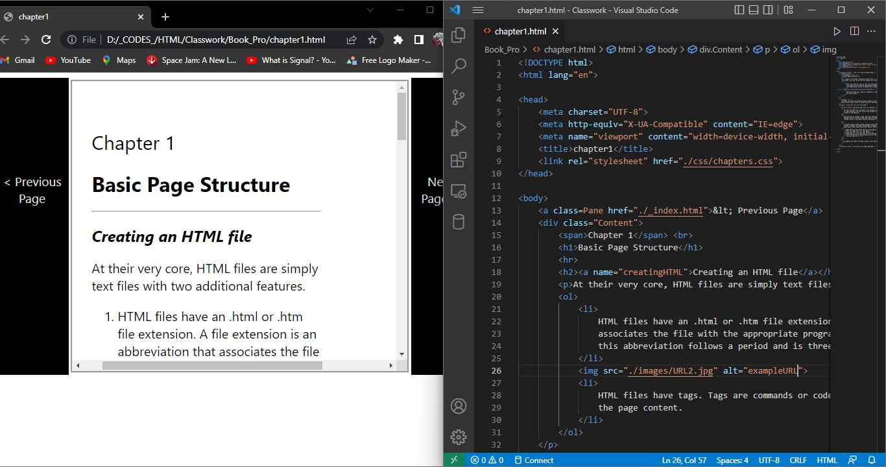
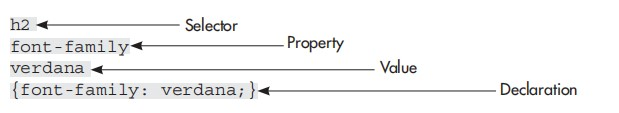

At their very core, HTML files are simply text files with two additional features.
Note:
You might also see more advanced types of pages on the Internet, such as
Microsoft’s
Active Server Pages (.asp)
or those written in the
Extensible Markup Language (.xml).
You can view HTML files located on your personal computer within your own web browser. It isn’t necessary for your files to be stored on a web server until you are ready to make them visible on the Internet
When you want to preview a page, open your web browser and choose File | Open (or Open Page or Open File, depending on your browser), and then browse through your hard drive until you locate the HTML file you want to open. (Note, if you don’t see any File menus in IE, try pressing the ALT key to reveal those menus.)
If you’re going to make frequent changes to the HTML file in a text editor, and then switch back to a web browser to preview the page, keeping both programs (a text editor and a web browser) open at the same time makes sense. When using a basic text editor, the steps to edit and preview HTML files are
By keeping your HTML file open in both a text editor and a browser, you can easily make and preview changes.

An HTML entity or tag is a command used to tell the browser how to display content on a
page. This command is similar to what happens behind the scenes when you highlight some
text in a word processor and
click the Italic button to make the text italicized.
With HTML, instead of clicking a button to make text italicized, you can type a tag before
and after the text you want to emphasize, as in the following:
<em> text will be emphasized </em>
You can easily recognize tags because they are placed within brackets (<>), or less-than and
greater-than symbols.
Did you notice that the tag to emphasize text and make it italic is em? Given that piece of
information, can you guess the tags to add a paragraph or create items in a list?
| Purpose | Tags |
|---|---|
| creating paragraphs | <p> |
| add break line | <br> |
| add table | <table> |
The purpose of cascading style sheets
(abbreviated CSS) is to
separate the style of a web page from its content.
The current HTML “rules” dictate that we only use HTML to identify the content of the
page, and then use a style sheet to specify the presentation of that content. This not only makes
web pages more accessible and usable to all users (regardless of their browsers, platforms,
operating systems, physical limitations, and so forth), but also to search engines and other
types of software.
Tip:
If you’ve ever used the Style drop-down menu in Microsoft Word, you’ve already used
a style sheet of sorts. The most basic style sheet might include a style called “Body Text,”
that specifies how the body text of the web page should look—which font and color to
use, how much space to leave around it, and so on.
To define a basic formatting style, you first must identify which tag you want to affect. This
tag is then called a selector in CSS. So, if you wanted to specify the style of all the level-2
headlines (<h2>) on a page, you would use h2 as your selector.
h2
In fact, the selector is essentially the tag without the brackets. With that in mind, can you
guess what the selector for <p> would be?
p
Once you have a selector, you can define its properties. Similar to how attributes work
in HTML, CSS properties alter specific attributes of a selector. Returning to the preceding
example, if you want to change the style of the level-2 headlines on your page to a 14-point
Verdana font, italic, and blue, you can use the following properties:
font-family
font-style
font-size
color
When you specify values for properties, you are creating a declaration for that selector.
The declaration and selector together are then referred to as a set of rules, or a ruleset. In the
typical ruleset, the declaration is enclosed in curly brackets after the selector.
So here are the first few pieces of our ruleset:

And here is how they all fit together to tell the browser to display all level-2 headlines in the Verdana font.
h2 {font-family: verdana;}
To specify the font size, color, and style (italic), we simply add on a few more of those properties.
h2 {
font-family: verdana;
font-size: 14pt;
color: blue;
font-style: italic;}
At this point, you can probably start to see the pattern—a CSS property is followed by a colon, and then its value, which in turn is followed by a semicolon.
As with attributes in HTML, properties have values. Most values can be specified in terms of color, keyword, length, percentage, or URL, as listed in Table 2-2. Length and percentage units can also be made positive or negative by adding a plus (+) or minus (−) sign in front of the value.
| Type of Value | Description |
|---|---|
| Color | When specifying color in a value, you can do so in one of three ways (see Chapter 3
for more information on color): - hexadecimal code, such as #000000 - RGB values, such as rgb (0,0,0) or rgb (0%, 0%, 0%) - one of the predefined keywords |
| Keyword | A keyword is a word defined in CSS that’s translated into a numerical value by the browser. For this reason, keywords are often considered relative because, ultimately, it’s up to the browser to decide how to render the content. An example of a keyword is small. |
| Length | In HTML, most units are defined in pixels. In CSS, however, you have the option of
using many other types of units. For example, when specifying text sizes with the
font-size property, you can use any of the following. (Abbreviations are shown
in parentheses.) - points (pt)—72 points in an inch - picas (pc)—12 points in a pica - pixels (px)— dots on the screen - ems (em)—refers to the height of the font in general - exs (ex)—refers to the height of an x in a particular font - inches (in) - millimeters (mm) - centimeters (cm) |
| Percentage | Relative percentages can be useful in CSS when used to position elements on a page. This is because percentages allow elements to move around, depending on how large the screen and window sizes are. When used in CSS, a percentage sign (%) following a numerical value, such as 100%, indicates a relationship between the surrounding elements. |
| URL | When you reference an absolute URL in CSS, use the following form: url (http://www.osborne.com) Similarly, relative URLs (typically those found within the current web site) are referenced in the following manner: url (home.html). |